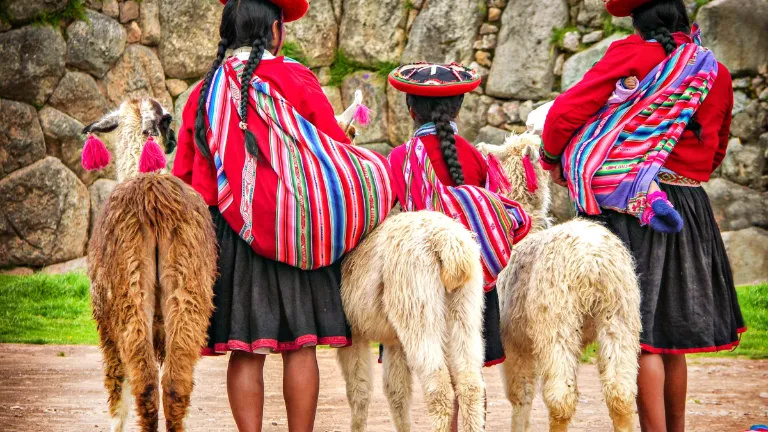

Peru 2027
Inkojen aarteet ja aromit · PESGL15AFI · 2027-03-04 – 2027-03-17 · Albatros tour page · portal
Days
Tap a day to expand. Free = estimated window, hours counted until 23:30 (bed before midnight).
Day 1 03-04 ▸
Helsinki → Lima
no mealsfree ~21:00–23:30 · ~2.5 h
Del Pilar Miraflores · 0 m
- HEL → LIM (one stop)
- Transfer to Miraflores; hotel Del Pilar (by Kennedy Park) or similar
~21:00–23:30 · ~2.5 h
0 h daylight · after flight; walk only · bed before midnight
Day 2 03-05 ▸
Lima old town + Larco
breakfastlunchfind dinnerfree ~17:00–23:30 · ~6.5 h
Del Pilar Miraflores · 0 m
- Lima old town: Plaza de Armas, cathedral
- San Francisco church + catacombs (25 000 burials, rediscovered 1943)
- Larco Museum (Pueblo Libre) — pre-Inca ceramics + gold
- Lunch included
~17:00–23:30 · ~6.5 h
~1 h daylight · tour ends ~16–17 · bed before midnight
Huaca Pucllana
Day 3 03-06 ▸
Fly to Cusco → Sacred Valley → Ollantaytambo
breakfastlunchfind dinnerfree ~16:00–23:30 · ~7.5 h
Sol Ollantay Valle · 2900 m
- Fly LIM → CUZ (Cusco 3 400 m)
- Drive straight down to the Sacred Valley (2 900 m)
- Afternoon arrival Ollantaytambo; old-town walk
- Lunch included
~16:00–23:30 · ~7.5 h
~2 h daylight · afternoon town walk ends · bed before midnight
Pinkuylluna storehouses
Day 4 03-07 ▸
Abra Málaga → Huamanmarca → Quillabamba
breakfastlunchfind dinnerfree ~17:00–23:30 · ~6.5 h
Hotel Purakilla · 1000 m
- Ollantaytambo → Abra Málaga (4 316 m; coffee, Verónica glacier view)
- Alfamayo viewpoint
- Huamanmarca archaeological site (usnu, four double doorways to the cardinal points)
- Huayopata-Calquiña tea plantation
~17:00–23:30 · ~6.5 h
~1 h daylight · Quillabamba late afternoon · bed before midnight
Day 5 03-08 ▸
Tunkimayo + cacao → back to Ollantaytambo
breakfastlunchfind dinnerfree ~17:00–23:30 · ~6.5 h
Sol Ollantay Valle · 2900 m
- 04:00 start → Tunkimayo reserve (Chuyapi river, ~2 000 m; cock-of-the-rock lek)
- Breakfast
- Chuncho cacao farm
- Return to Ollantaytambo
~17:00–23:30 · ~6.5 h
~1 h daylight · 04:00 start, count on 2–3 h · back from Tunkimayo + cacao · bed before midnight
Piedras cansadas — tired stones
Day 6 03-09 ▸
Machu Picchu
breakfastfind dinnerfree ~18:30–23:30 · ~5 h
Sol Ollantay Valle · 2430 m
- Train Ollantaytambo → Aguas Calientes
- Machu Picchu (2 430 m), ≥3 h on site (group may split; omatoimisesti after the tour)
- Train back late afternoon
~18:30–23:30 · ~5 h
0 h daylight · train back late afternoon · bed before midnight
Day 7 03-10 ▸
Maras + Moray
breakfastlunchfind dinnerfree ~14:30–23:30 · ~9 h
Sol Ollantay Valle · 2900 m
- Maras salt pans (~3 000 pans)
- Moray terraces
- Misminay village lunch
- Return; afternoon/evening free
~14:30–23:30 · ~9 h
~4 h daylight · Maras + Moray + lunch · bed before midnight
Kachiqhata quarry / Ñaupa Iglesia / Choquequilla
Day 8 03-11 ▸
Cusco + Sacsayhuamán
breakfastfind dinnerfree ~14:00–23:30 · ~9.5 h
Tierra Viva Centro · 3400 m
- Drive to Cusco (3 400 m)
- San Pedro market
- Sacsayhuamán
- Rest of the day free; hotel walking distance from Plaza (Tierra Viva Centro)
~14:00–23:30 · ~9.5 h
~4 h daylight · after Sacsayhuamán · bed before midnight
Coricancha / Qorikancha / Museo de Arte Precolombino (MAP)
Day 9 03-12 ▸
Free day Cusco (or Rainbow Mountain)
breakfastfind dinnerfree ~08:00–23:30 · ~15.5 h
Tierra Viva Centro · 3400 m
- Full free day in Cusco
- Or Rainbow Mountain add-on (Vinicunca 5 200 m; 04:00; 158 €/178 €; min 8; book ≥60 days; PDF: April–November only — confirm for March)
~08:00–23:30 · ~15.5 h
~10 h daylight · full free day · bed before midnight
Sayhuite / Saywite monolith / Andahuaylillas — San Pedro church + Museo Ritos Andinos
Day 10 03-13 ▸
Cusco → Raqch'i → Pukara → Puno
breakfastlunchfind dinnerfree ~18:00–23:30 · ~5.5 h
La Hacienda Plaza de Armas · 3812 m
- Longest drive, across the altiplano
- Raqch'i — Temple of Wiracocha (92 m × 20 m wall, 4 km enclosure)
- Lunch
- Pukara museum (monoliths)
~18:00–23:30 · ~5.5 h
0 h daylight · Puno at dusk · bed before midnight
Day 11 03-14 ▸
Lake Titicaca: Uros + Taquile
breakfastlunchfind dinnerfree ~16:30–23:30 · ~7 h
La Hacienda Plaza de Armas · 3812 m
- Uros floating islands
- Taquile (Collata village, 45 min), family lunch, hill walk
- Back late afternoon
~16:30–23:30 · ~7 h
~1.5 h daylight · back from Taquile · bed before midnight
Day 12 03-15 ▸
Juliaca → Lima → onward flight
breakfastfind dinnerfree ~08:00–flight · 0–4 h
~08:00–flight · 0–4 h
depends on Juliaca flight · ask leader day 10 · bed before midnight
Sillustani chullpas